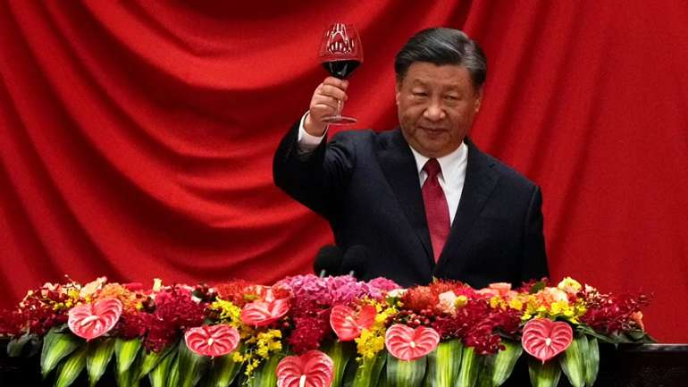

USA - Suck
Грушевицький Денис | Медведюк Артем | Гаврилюк Назарій
Ділове спілкування в Китаї має свої унікальні особливості, що відрізняють його від західних підходів. Розуміння цих аспектів може суттєво вплинути на успіх переговорів та співпраці з китайськими партнерами.
Китайська культура значно впливає на ділове спілкування. Ключові моменти включають важливість "обличчя" (面子 - miànzi), дотримання ієрархії, а також концепцію гармонії та уникнення конфліктів.
При зустрічі важливо дотримуватися формальності. Рукостискання є звичайним, але менш інтенсивним, ніж на Заході. Поклони та обмін візитками двома руками також є частиною етикету.
У Китаї важливо стежити за своєю мовою тіла. Прямий погляд в очі може сприйматися як агресивний. Повага та стриманість у вираженні емоцій дуже важливі.
Дарування подарунків є важливою частиною ділових відносин. Вибір подарунка повинен бути ретельним та відповідати культурним нормам. Подарунок приймається обома руками, що демонструє повагу.
Переговори в Китаї можуть бути тривалими та детальними. Важливо показати повагу до партнерів, уникати прямої критики та бути готовим до компромісів.
Листування повинно бути чітким і формальним. Використовуйте титули та поважні форми звернення. Дотримання правил граматики та стилю також є важливим.
Ділові зустрічі часто супроводжуються спільними обідами або вечерями. Важливо знати етикет за столом, включаючи правила користування паличками, порядок страв та поводження за столом.
У Китаї велике значення надається побудові та підтримці довгострокових відносин. Часті зустрічі, телефонні дзвінки та обмін люб’язностями допоможуть зміцнити ділові стосунки.
Розуміння культурних особливостей та правил ділового етикету в Китаї допоможе успішно співпрацювати з китайськими партнерами. Повага, терпіння та готовність до навчання – ключі до успіху.